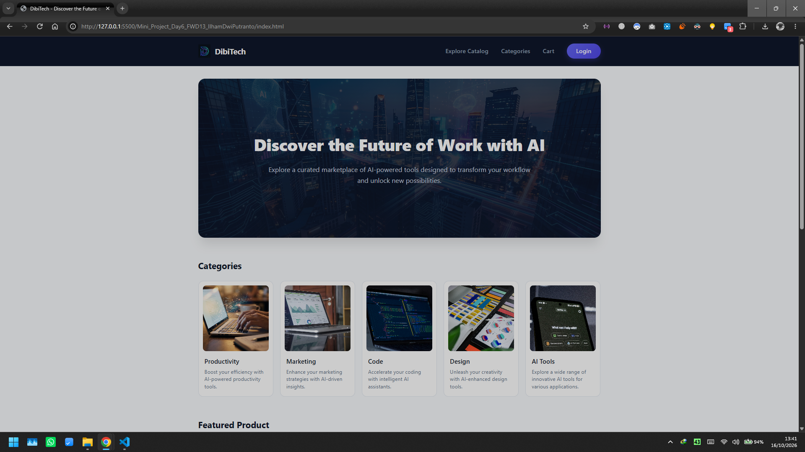
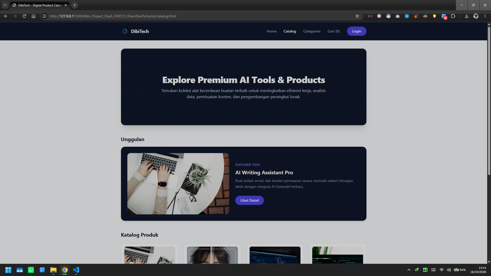
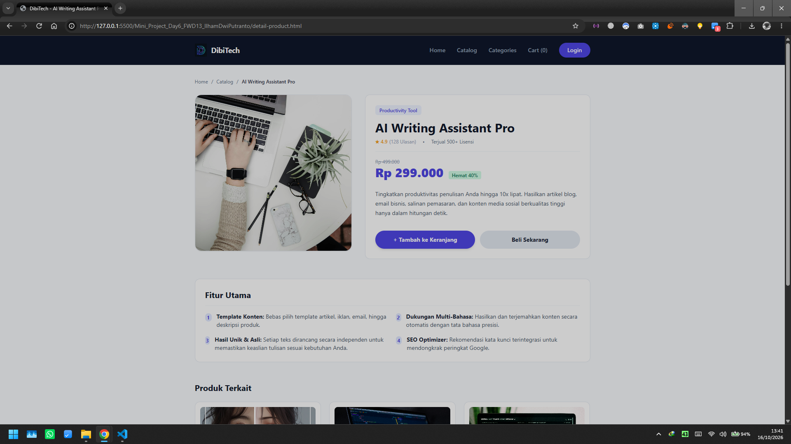
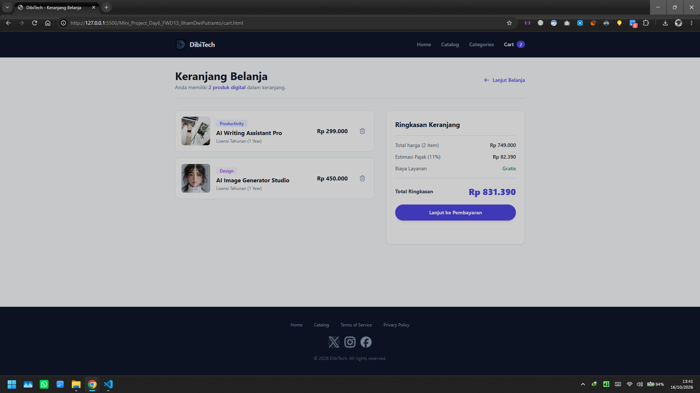
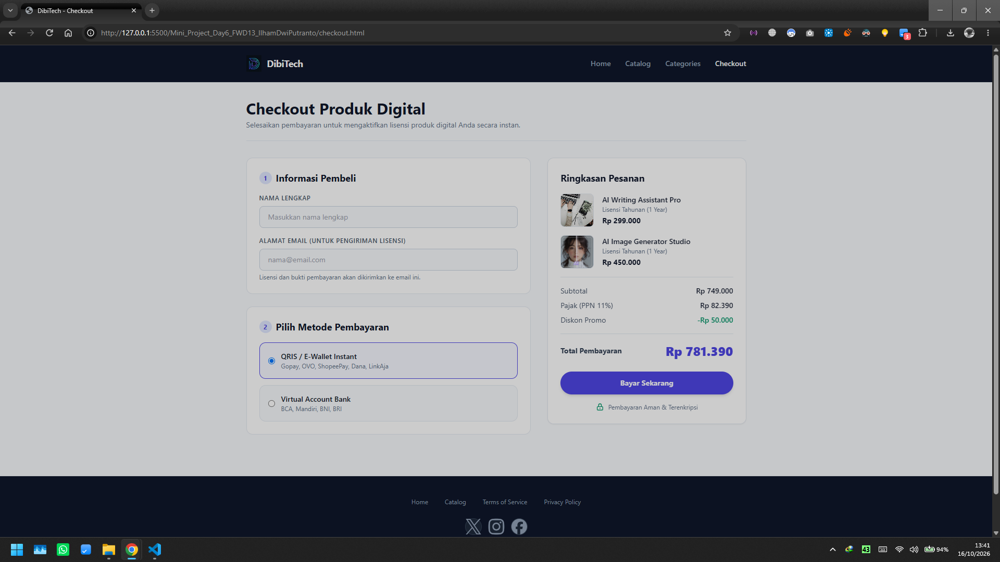

Ilham Dwi Putranto
Kelas: Full-Stack Web Development
Kesan Mengerjakan Mini-Project DAY 6
Pengerjaan, pemahaman mengenai alur pengembangan aplikasi web modern semakin matang.
Penggunaan Tailwind CSS, arsitektur reusable styling, dan pemetaan design terbukti memangkas waktu eksekusi, sehingga fokus utama bisa diberikan pada efisiensi logika, respon antarmuka yang adaptif.
Langkah Pengerjaan Projek
Tahapan terstruktur beserta kesan pengerjaan pada setiap tahapan proyek DAY 6.
Memahami Perintah Proyek
Menganalisis instruksi tugas DAY 6, sasaran utama, dan kriteria penilaian Tailwind/HTML.
Menyusun Halaman dan Konten
Pengembangan halaman Login, Catalog, Cart, Checkout, dan Detail Produk secara konsisten.
Menyusun Struktur Design
Merencanakan alur file HTML, integrasi Tailwind CDN, penamaan, identifikasi reusable, dan pengaturan aset pendukung.
Membuat Reusable Design
Penerapan custom reusable styling untuk beberapa reusable style, seperti color, tombol dan, card kustom.
Implementasi Responsive UI
Penerapan Responsive (`media queries:`,`sm:`, `md:`, `lg:`) untuk layar mobile hingga desktop.
Pengujian & Verifikasi
Memeriksa kelengkapan atribut accessibility (`alt`, struktur heading H1-H3, kontras warna).
Dokumentasi
Merapikan penulisan sintaks, pembersihan file yang tidak terpakai, dan menyusun screenshot.
Final Push & Submit
Mengunggah seluruh perubahan ke repositori GitHub dan menyertakan link di LMS.
Program & Infrastruktur Mengerjakan Proyek
Ekosistem utama yang mendukung penuh proses pengerjaan projek ini.
Gemini & GPT AI
Untuk membantu pembelajaran dan mamahami code, evaluasi, dan debugging.
Google Search
Eksplorasi referensi dokumentasi sintaks, riset pustaka, dan komparasi solusi.
Rekaman Live Class
Panduan acuan materi utama untuk mengkonfirmasi syarat dan alur tugas.
VS Code
Code editor utama tempat eksekusi penulisan program dan manajemen folder.
Tailwind CSS CDN
Framework CSS utama untuk mempermudah styling modern berbasis utility classes.
Daftar Halaman & Modul Projek DAY 6
Akses cepat ke masing-masing halaman HTML yang telah disesuaikan dengan Tailwind CSS & style1.css.
1. Halaman Index HTML & CSS (Style.css)
Halaman landing page yang menggunakan kombinasi HTML5 dan CSS3 Vanilla dengan penulisan BEM.
2. Halaman Login
Halaman eksplorasi login dengan desain responsive dan komponen reusable
2. Katalog Produk Digital
Halaman eksplorasi katalog produk dengan desain grid responsive dan komponen reusable
3. Detail Produk
Tampilan lengkap informasi produk, daftar fitur utama, harga, dan produk terkait.
4. Keranjang Belanja
Halaman pengelolaan item belanjaan, perhitungan estimasi pajak, promo voucher, dan ringkasan total.
5. Checkout & Pembayaran
Formulir data diri pembeli, opsi pembayaran instant, dan konfirmasi rincian pembayaran.
Form Kritik & Saran Penilai
Masukan Anda sangat berharga. Form ini dapat diisi langsung oleh penilai dan akan otomatis terhubung ke WhatsApp.
Dokumentasi Pengujian Program (Bukti Berjalan)
Klik gambar di bawah untuk menampilkan tampilan fullscreen.




